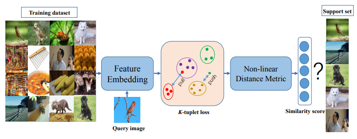
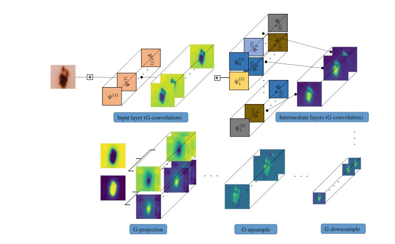

Xiaomeng LiPostdoctoral Research Fellow
1070 Arastradero Road, |
 |


Biography
I am a postdoctoral research fellow in Stanford University, working with Prof. Lei Xing. Before that, I obtained my Ph.D. degree in the Department of Computer Science and Engineering, The Chinese University of Hong Kong (CUHK) in June 2019, where I am fortunate to be co-advised by Prof. Pheng-Ann Heng and Prof. Chi-Wing Fu.
My research interests include artificial intelligence and its applications to medical images analysis.
Honors & Awards
| Champion, Liver Tumor Segmentation Challenge Leaderboard, 2017 (util. Oct. 2018, team name:xjqi, code is public online) |
| Champion, Automatic IVD Localization and Segmentation from 3D Multi-modality MR Images, 2016 |
| National Scholarship in China (0.6%), 2014 |
| First-class student Scholarship (5.0%), 2012, 2013 |
| Honorable Mention, Interdisciplinary Contest in Modeling (ICM), Consortium for Mathematics and Its Application, 2013 |
| National 2nd Prize, Mathematical Contest in Modeling(MCM) (3.10%), 2012. |
Selected Publications [Google Scholar]

|
Deep Sinogram Completion with Image Prior for Metal Artifact Reduction in CT Images. Lequan Yu, Zhicheng Zhang, Xiaomeng Li, Lei Xing. IEEE Transactions on Medical Imaging (IEEE TMI), 2020. |

|
Difficulty-aware Meta-learning for Rare Disease Diagnosis. Xiaomeng Li, Lequan Yu, Yueming Jin, Chi-Wing Fu, Lei Xing, Pheng-Ann Heng. Medical Image Computing and Computer Assisted Intervention (MICCAI), 2020. |

|
Cascaded Robust Learning at Imperfect Labels for Chest X-ray Segmentation. Xue Cheng, Qiao Deng, Xiaomeng Li, Qi Dou, Pheng-Ann Heng. Medical Image Computing and Computer Assisted Intervention (MICCAI), 2020. |

|
Self-supervised Feature Learning via Exploiting Multi-modal Data for Retinal Disease Diagnosis. Xiaomeng Li, Mengyu Jia, Md Tauhidul Islam, Lequan Yu, Lei Xing. IEEE Transactions on Medical Imaging (IEEE TMI), 2020. |

|
Transformation-consistent Self-ensembling Model for Semi-supervised Medical Image Segmentation. Xiaomeng Li, Lequan Yu, Hao Chen, Chi-Wing Fu, Lei Xing, Pheng-Ann Heng. IEEE Transactions on Neural Networks and Learning Systems (IEEE TNNLS), 2020. |

|
Deep Sub-region Network for Salient Object Detection. Liansheng Wang, Rongzhen Chen, Lei Zhu, Haoran Xie, Xiaomeng Li. IEEE Transactions on Circuits and Systems for Video Technology (IEEE TCSVT), 2020. |
|  | Revisiting Metric Learning for Few-shot Image Classification. Xiaomeng Li, Lequan Yu, Chi-Wing Fu, Meng Fang, Pheng-Ann Heng. Neurocomputing, 2020. |

|
CANet: Cross-disease Attention Network for Joint Diabetic Retinopathy and Diabetic Macular Edema Grading. Xiaomeng Li, Xiaowei Hu, Lequan Yu, Lei Zhu, Chi-Wing Fu, Pheng-Ann Heng. IEEE Transactions on Medical Imaging (IEEE TMI), 2019. |

|
Uncertainty-aware Self-ensembling Model for Semi-supervised 3D Left Atrium Segmentation. Lequan Yu, Shujun Wang, Xiaomeng Li, Chi-Wing Fu, Pheng-Ann Heng. Medical Image Computing and Computer Assisted Intervention (MICCAI), 2019. |
|  | Deeply supervised rotation equivariant network for lesion segmentation in dermoscopy images. Xiaomeng Li, Lequan Yu, Chi-Wing Fu, Pheng-Ann Heng. Medical Image Computing and Computer Assisted Intervention Workshop 2018. [Oral] |

|
Semi-supervised Skin Lesion Segmentation via Transformation Consistent Self-ensembling Model. Xiaomeng Li, Lequan Yu, Hao Chen, Chi-Wing Fu, Pheng-Ann Heng. The British Machine Vision Conference (BMVC), 2018. |

|
H-DenseUNet: Hybrid densely connected UNet for liver and liver tumor segmentation from CT volumes. Xiaomeng Li, Hao Chen, Xiaojuan Qi, Qi Dou, Chi-Wing Fu, Pheng-Ann Heng. IEEE Transactions on Medical Imaging (IEEE TMI), 2018. |

|
3D multi-scale FCN with random modality voxel dropout learning for Intervertebral Disc Localization and Segmentation from Multi-modality MR Images. Xiaomeng Li, Qi Dou, Hao Chen, Chi-Wing Fu, Guoyan Zheng and Pheng-Ann Heng, et al. Medical image analysis (MedIA), 2018. |

|
Multi-scale and modality dropout learning for intervertebral disc localization and segmentation. Xiaomeng Li, Qi Dou, Hao Chen, Chi-Wing Fu, Pheng-Ann Heng. Medical Image Computing and Computer Assisted Intervention Workshop, 2016. |

|
Feature-preserving ultrasound speckle reduction via L0 minimization. Lei Zhu, Weiming Wang, Xiaomeng Li, Qiong Wang, Jing Qin, Chi-Wing Fu and Pheng-Ann Heng, et al. Neurocomputing, 2018. |

|
Ultrasound Speckle Reduction via Minimization. Lei Zhu, Weiming Wang, Xiaomeng Li, Qiong Wang, Jing Qin, Kin-Hong Wong, Pheng-Ann Heng. Asian Conference on Computer Vision (ACCV), 2016. |
Experience
-
Tencent AI Lab, deep learning for computer vision.Jun. 2018 – Dec. 2018
Research Intern
Topic: Few-shot Learning
-
The Chinese University of Hong Kong, Hong Kong.Mar. 2015 – Aug. 2015
Research Assistant
Topic: Surgical Simulation
Teaching
| 2015-2016 | Fall | CSCI1540 Fundamental computing with C++ |
| 2015-2016 | Spring | ENGG1100 Introduction to Engineering Design |
| 2016-2017 | Fall | CSCI2100 Data structure |
| 2016-2017 | Spring | CSCI3310 Mobile Computing and Applications Development |
| 2017-2018 | Fall | CSCI3310 Mobile Computing and Applications Development |

© Xiaomeng Li | Last updated: July 11 2020